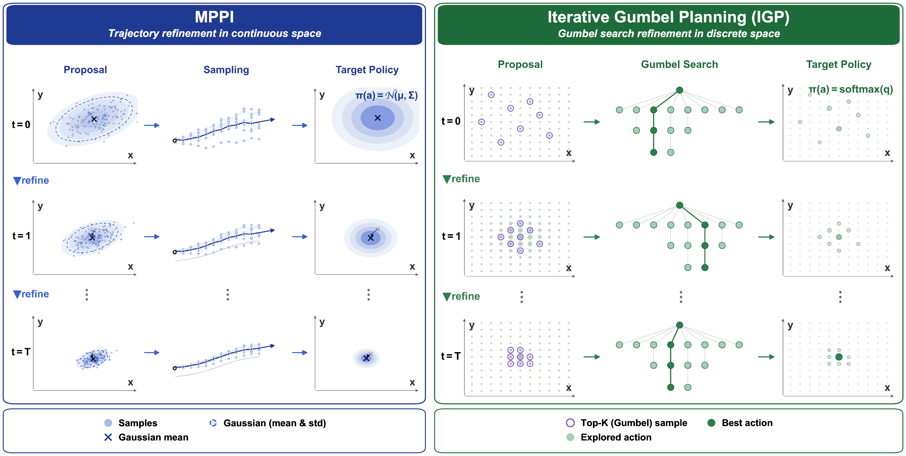
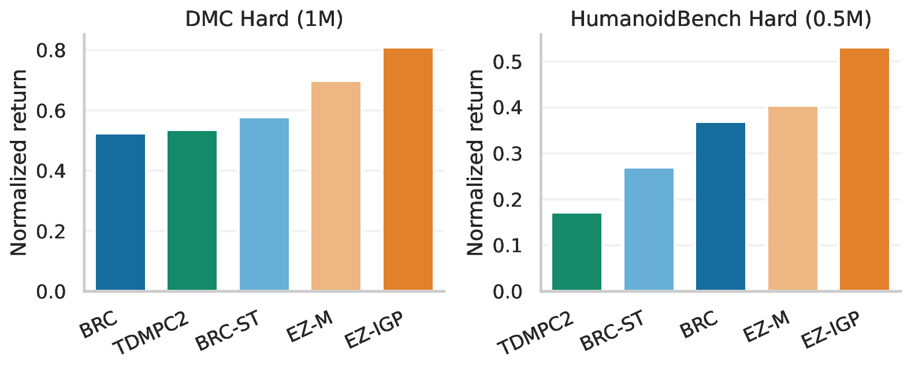

Continuous control · Model-based reinforcement learning
Iterative Gumbel Planning
for Continuous Control
1 Texas A&M University2 CSAIL, MIT3 Harvard University
* Equal contribution · † Corresponding author
A factorized categorical policy meets iterative search.
Explore how the learned behavior compares with a Gaussian policy.
See the policies in motion
Same task. Different policies.
Selected qualitative rollouts, not statistical comparisons. Paired playback starts the clips together; initial states and trajectory durations are not guaranteed to match. Videos are silent. In wall mode, only visible clips play, and off-screen clips pause.
The idea
Align the policy with search.
Search-based planning evaluates a finite set of action candidates. Continuous-control policies, however, commonly represent these decisions with a Gaussian. We study how winner-action distillation can exert variance-expanding gradient pressure under local assumptions, and observe elevated policy variance over the evaluated training horizon.
Iterative Gumbel Planning (IGP) instead uses a per-dimension factorized categorical policy. Gumbel-based candidate sampling and repeated proposal refinement enable search over high-dimensional continuous actions without enumerating the full joint action grid. Implemented on EfficientZero-Multitask, the resulting EZ-IGP achieves strong aggregate performance on DMControl and HumanoidBench, with lower temporal action variation in the evaluated comparisons.
How it works
Propose. Search. Refine.
A compact, factorized action distribution supports multiple rounds of planning at the same state.

- 01
Propose candidates
Sample bins without replacement within each action dimension, then align ranks to form joint actions. This is a structured approximation, not exact sampling from the full joint grid.
- 02
Evaluate with search
Use the learned world model and value estimates to evaluate joint candidates through Gumbel search.
- 03
Refine and repeat
Update the proposal, retain the previous round’s best action, and sample the remaining candidates from the refined distribution.
Empirical results
From locomotion to whole-body control.
EZ-IGP is evaluated on seven DMC-Hard tasks and fourteen HB-Hard tasks. The figure below reproduces the paper’s aggregate comparison.

Results depend on the task and search budget. The comparisons do not imply a universal advantage across all individual tasks or isolate every architectural and optimization factor.
Reference
Citation
The arXiv link and complete citation will be added when available.
Shaohuai Liu, Weirui Ye, Yilun Du, and Le Xie.
Iterative Gumbel Planning for Continuous Control.